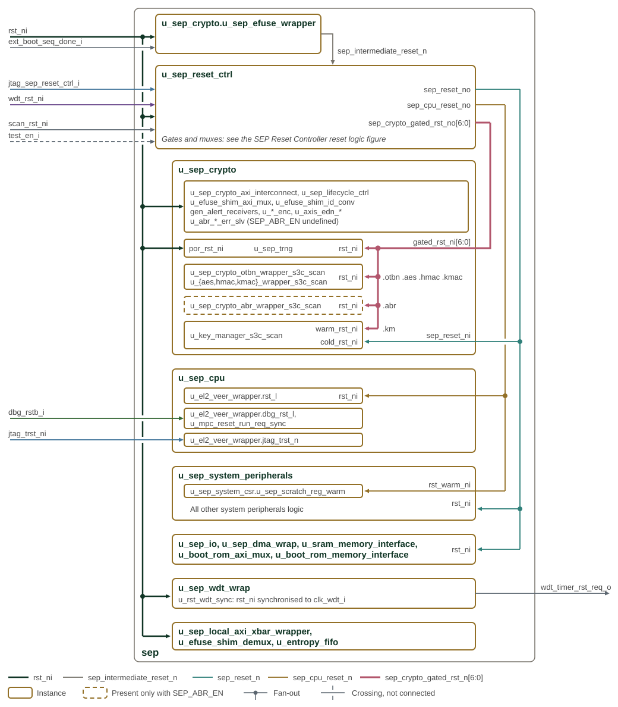
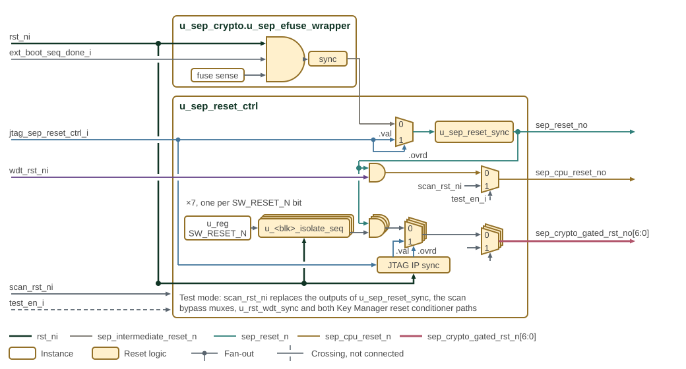
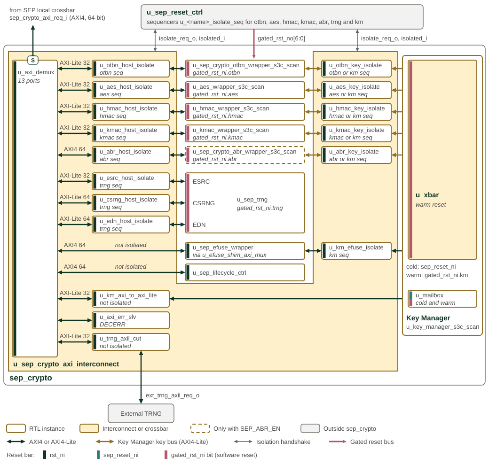

SEP Reset Controller
The SEP Reset Controller provides software-controllable resets for the Key Manager, crypto accelerators, and internal TRNG complex. It is accessible via AXI4 at generated base address 0x1080_3000.
Figure 1 shows the reset domains controlled by the SEP Reset Controller.

Boundary reset inputs enter on the left and the generated resets run in the
channel on the right, each net in its own colour, with the port it drives named
at the instance edge. Inside each instance the figure shows which sub-instances
each reset reaches. Figure 2 shows the logic inside
u_sep_efuse_wrapper and u_sep_reset_ctrl, and
SEP cryptographic subsystem resets shows the resets inside u_sep_crypto.
u_sep_efuse_wrapper, part of u_sep_crypto, ANDs rst_ni,
ext_boot_seq_done_i and fuse-sense done and synchronizes the result into
sep_intermediate_reset_n. The Reset Controller builds its three outputs from
it, as Figure 2 shows. The stacked row repeats once for
each SW_RESET_N bit.

-
sep_reset_no: the JTAGsep_reset_noverride mux (u_sep_reset_ovrd_mux) selectssep_intermediate_reset_nor the JTAG value, and the 2-flopu_sep_reset_syncasserts the result asynchronously and releases it synchronously toclk_i. It resets the Reset Controller’s own register block, the Key Manager cold domain, the system peripherals, the SPI host, the DMA and the SRAM and boot ROM interfaces. -
sep_cpu_reset_no:sep_reset_nANDed withwdt_rst_ni(u_sep_cpu_rst_and), then the scan bypassu_sep_cpu_rst_scan_bypass. It resets the EL2 core (rst_l) and the warm scratch registers. -
sep_crypto_gated_rst_no[6:0]: for each bit, the output ofu_<blk>_isolate_seqANDed withsep_reset_n(u_<blk>_rst_and), then the per-IP JTAG override muxu_<blk>_rst_ovrd_mux, then the scan bypassu_<blk>_rst_scan_bypass. The per-IP override bits reach the muxes through the 2-flop synchronizersu_jtag_ip_ovrd_syncandu_jtag_ip_val_sync. The seven bits reset OTBN, AES, HMAC, KMAC, the TRNG, Adams Bridge and the Key Manager warm domain.
rst_ni resets the isolation sequencers and the JTAG override synchronizers.
It also resets, directly, the crypto interconnect, life cycle controller, eFuse
shim mux, alert receivers, encoders and EDN AXIS adapters, the TRNG power-on
reset por_rst_ni, the watchdog, the local crossbar, the eFuse shim demux and
the entropy pool. When the build does not define SEP_ABR_EN, the Adams Bridge
error responders take rst_ni in place of the Adams Bridge wrapper. The
watchdog synchronizes rst_ni into clk_wdt_i for its counter, and its bite
leaves the SEP on wdt_timer_rst_req_o. dbg_rstb_i resets the EL2 debug
module and u_mpc_reset_run_req_sync, and jtag_trst_ni resets the EL2 JTAG
TAP. While test_en_i is high, scan_rst_ni replaces the outputs of
u_sep_reset_sync, each scan bypass mux, u_rst_wdt_sync and both Key Manager
reset conditioner paths.
1. Software Reset Register
Table 1 defines the software reset controls and their reset values.
| Bit | Field | Access | Default | Description |
|---|---|---|---|---|
0 |
km_sw_rst_n |
RW |
0 |
KM reset (0=assert, 1=release) |
1 |
otbn_sw_rst_n |
RW |
1 |
OTBN reset (0=assert, 1=release) |
2 |
aes_sw_rst_n |
RW |
1 |
AES reset (0=assert, 1=release) |
3 |
hmac_sw_rst_n |
RW |
1 |
HMAC reset (0=assert, 1=release) |
4 |
kmac_sw_rst_n |
RW |
1 |
KMAC reset (0=assert, 1=release) |
5 |
trng_sw_rst_n |
RW |
1 |
Shared entropy-source (ESRC), CSRNG, EDN and internal DRBG endpoint reset request (0=assert, 1=release); excludes the KM sampler |
6 |
abr_sw_rst_n |
RW |
1 |
Adams Bridge reset (0=assert, 1=release) |
On power-up, SW_RESET_N resets to 0x7E: KM is held in reset, while OTBN,
AES, HMAC, KMAC, the TRNG, and Adams Bridge are released. The SEP host firmware
writes 1 to release an IP from reset and writes 0 to request its software
reset.
2. Isolation and Reset Sequencing
Each SW_RESET_N bit drives a per-domain sequencer that isolates the domain’s
AXI paths before asserting its reset, so no transaction is in flight when reset
asserts. Figure 3 shows every isolate stage in the
crypto AXI interconnect and the sequencer that requests it.

Host paths leave u_axi_demux on the left, with the bus type after conversion
above each arrow. Key Manager paths leave u_xbar on the right. Both kinds of
isolate stage sit in u_sep_crypto_axi_interconnect, whose outline wraps
around the engine wrappers it serves. The italic line in an isolate stage names
the u_sep_reset_ctrl sequencer that requests it: otbn seq is
u_otbn_isolate_seq, and otbn or km seq means that either sequencer requests
it. The eFuse, lifecycle, Key Manager mailbox and external TRNG ports have no
isolate stage. The coloured bar at the left of each instance shows its reset.
The interconnect and all its isolate stages run on rst_ni, so they stay out
of reset while a domain behind them is reset. Each engine wrapper, u_sep_trng
and the Key Manager crossbar are reset by their gated_rst_ni bit, and the
mailbox by both the Key Manager cold reset sep_reset_ni and its warm reset.
Without SEP_ABR_EN, error responders that return DECERR replace the Adams
Bridge wrapper behind both of its isolate stages.
A software reset proceeds as follows:
-
Firmware writes
0to the domain’sSW_RESET_Nbit. -
The sequencer requests isolation on the domain’s paths. New transactions on them complete with SLVERR and read data
0x1501A7ED. -
Each isolate unit drains its accepted transactions, then reports isolated.
-
Once all of the domain’s paths report isolated, the domain’s reset asserts.
-
Firmware writes
1. Reset and isolation are released together.
Table 2 lists the paths each domain isolates.
| Domain | Paths isolated |
|---|---|
OTBN, AES, HMAC, KMAC, Adams Bridge |
Host path and Key Manager key path |
Key Manager |
All five key paths and the eFuse path |
TRNG |
ESRC, CSRNG, and EDN host paths |
A key path isolates when either endpoint is reset, so neither end can enter reset mid-transfer.
An OTBN, AES or KMAC software reset also cancels that engine’s endpoints in the shared crypto EDN adapter, from the cycle its paths report isolated until its reset releases. EDN therefore keeps serving the engine while it drains. A word committed to the engine but not yet acknowledged is discarded rather than delivered to another client; other clients are unaffected.
The Key Manager mailbox, eFuse wrapper, lifecycle controller, and external TRNG
ports are not isolated. None of these targets has its own software reset
domain; the mailbox’s SEP-facing side is in the Key Manager’s cold domain. No
SW_RESET_N request can therefore reset one mid-transaction.
The sequenced resets are ANDed with sep_reset_n, which holds every IP in reset
until eFuse sensing completes during boot. JTAG can drive sep_reset_n in
place of the eFuse reset through the SEP slice of the IC_RESET TDR (see
IC_RESET Overrides in the DTP chapter), which releases it on a part
whose fuse sensing does not complete. The per-IP JTAG override muxes are
applied last, allowing debug to force reset without waiting for isolation.
3. Resetting the Key Manager
The sequenced Key Manager reset drives the Key Manager’s warm reset, which restarts its CPU and volatile state but leaves its cold domain intact. That domain includes the SEP-facing side of the mailbox, so the SEP host can still reach the mailbox during the reset.
A soft reset requested through the Key Manager’s SOFT_RST_CODE register
takes the same warm path without isolation; the
software reset section
of the Programmer’s Guide covers both requests. None is needed: the Key Manager
CPU is the only master on its key and eFuse paths and completes each access
before issuing the next, so no transaction is in flight when it writes
SOFT_RST_CODE.
4. Resetting the TRNG
The TRNG reset bit controls one reset domain containing the entropy source, CSRNG, EDN, and DRBG endpoint state. ESRC, CSRNG, and EDN occupy three independent demux ports, so the TRNG sequencer isolates all three host paths and does not assert the TRNG reset until all three report isolated. Reset and isolation are released together.
The fabric entropy-pool AXI responder is not reset, so accesses remain responsive. While the TRNG reset is active, both post-mux EDN adapters and the pool synchronously clear their pending and buffered state, including the pool’s half-packed word, FIFO contents, and fill-stall state.
Consumers are not part of the reset coordinator. Native EDN requests from AES, KMAC, and OTBN receive no acknowledgement while the post-mux adapter is clearing, remain asserted, and are serviced with fresh entropy after the chain restarts. Software may wait for those consumers to become idle and hold them in reset when policy requires aborting in-flight operations, but that is not required to assert the TRNG reset.
The Key Manager stream has no post-mux adapter, so TRNG reset does not scrub it. If the DRBG sampler is requesting or assembling a word when the reset asserts, the next DATA read can mix leftover bytes with new beats, or the sampler can flag a stream error. The SEP host must keep the Key Manager idle before asserting the TRNG reset. Holding KM in software reset is sufficient; hardware does not enforce the ordering.
The TRNG recovery sequence in the Programmer’s Guide gives the firmware steps around this reset.
5. Memory Map and Register Reference
5.1. Memory Map
Register offsets are relative to the block base in the subsystem memory map. The detailed map below defines each register and its fields.
5.2. Detailed Register Map
SEP Reset Control Address Map
Software resets for KM, OTBN, AES, HMAC, KMAC, the internal TRNG, and Adams Bridge.
Register List:
| Address | Name | Access | Description |
|---|---|---|---|
| 0x0 | SW_RESET_N | RW | - |
Register Details:
SW_RESET_N
| Bits | Field | Access | Reset | Description |
|---|---|---|---|---|
| 63:7 | Reserved | - | - | Reserved |
| 6 | abr_sw_rst_n | RW | 0x1 | Adams Bridge reset (0=assert, 1=release) |
| 5 | trng_sw_rst_n | RW | 0x1 | Internal TRNG reset request (0=assert, 1=release). Hardware drains and isolates the entropy-source, CSRNG, and EDN AXI ports before asserting the shared TRNG reset. |
| 4 | kmac_sw_rst_n | RW | 0x1 | KMAC reset (0=assert, 1=release) |
| 3 | hmac_sw_rst_n | RW | 0x1 | HMAC reset (0=assert, 1=release) |
| 2 | aes_sw_rst_n | RW | 0x1 | AES reset (0=assert, 1=release) |
| 1 | otbn_sw_rst_n | RW | 0x1 | OTBN reset (0=assert, 1=release) |
| 0 | km_sw_rst_n | RW | 0x0 | KM reset (0=assert, 1=release) |